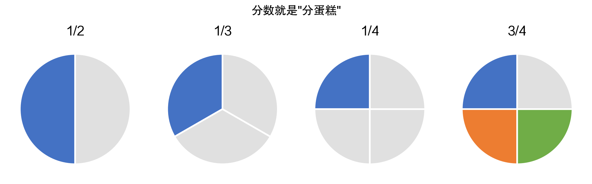
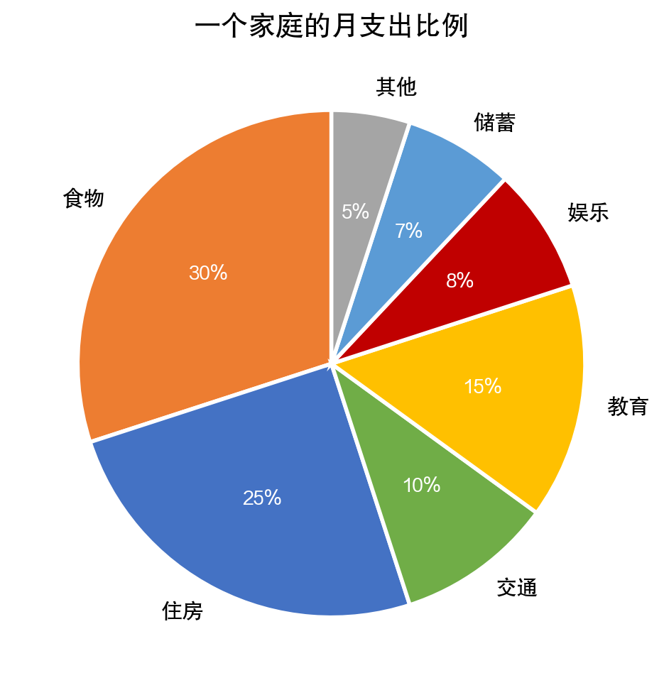
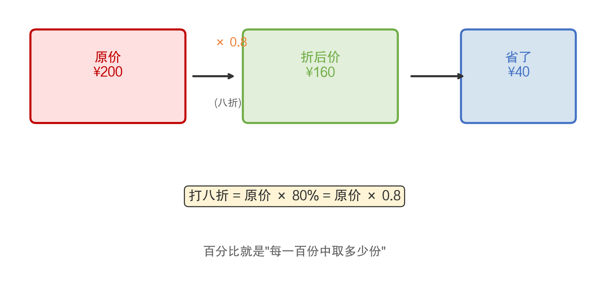
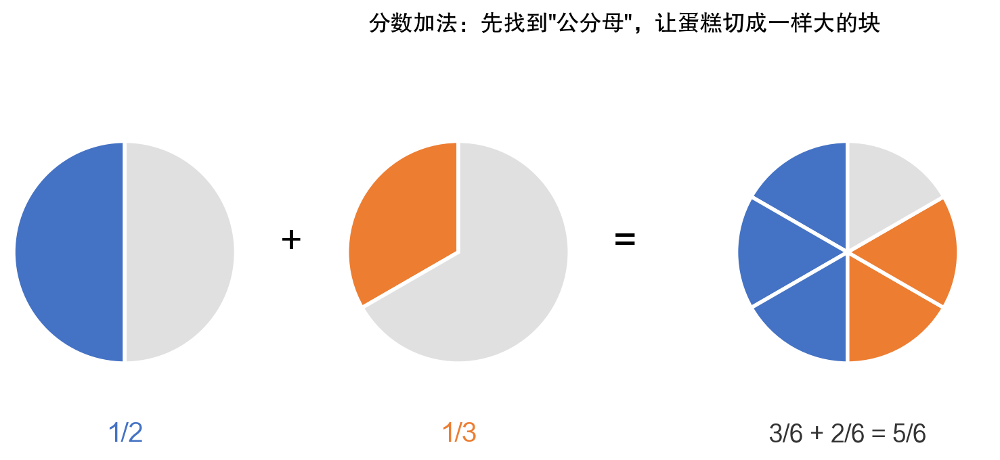

数学有什么用 · 第3期 / 共12期
分数就是分蛋糕
小学篇(二)：分数与百分比的生活智慧
如果说整数是数学世界的"固体"，那么分数就是"液体"——它可以表示任何大小，精确到你想要的任何程度。分数和百分比是小学高年级的核心内容，也是很多孩子觉得"开始变难"的转折点。但只要理解了分数的本质，它其实非常直观。
2.1 分数就是分蛋糕
分数是什么？就是"把一个整体分成若干等份，取其中的几份"。最直观的比喻就是分蛋糕。
如图2-1所示，一个蛋糕分成2份取1份就是1/2（二分之一），分成3份取1份就是1/3（三分之一），分成4份取1份就是1/4（四分之一），分成4份取3份就是3/4（四分之三）。

图2-1 分数就是"分蛋糕"
分数的分母告诉你"切成几块"，分子告诉你"拿几块"。这个概念看起来简单，但它是理解很多高级数学概念的基础。比例、概率、统计中的百分位数，都建立在分数的概念之上。
一个常见的误解是"分数一定比1小"。其实不然。3/2就是一个半蛋糕，比一个完整的蛋糕还多。分数既可以表示"不到一个"，也可以表示"超过一个"。当分子大于分母时，就是"假分数"，可以化成带分数，比如3/2 = 1又1/2。
2.2 百分比无处不在
百分比是一种特殊的分数——分母固定为100。50%就是50/100 = 1/2，25%就是25/100 = 1/4。为什么人们那么喜欢用百分比？因为它让比较变得更容易。
"甲班有45人，考试及格42人；乙班有38人，考试及格35人。"到底哪个班及格率更高？如果只看人数，不好比。但换成百分比：甲班93.3%，乙班92.1%，一目了然。
如图2-2所示，一个家庭的月支出用百分比来表示，就能清楚地看出钱都花在哪里了。

图2-2 一个家庭的月支出比例
你在新闻中经常看到的"GDP增长6.5%""失业率3.8%""通货膨胀率2.3%"——这些都是用百分比来表达的。如果不理解百分比，就无法看懂经济新闻、财务报告，甚至连食品营养标签都看不明白（"每份含脂肪的每日推荐摄入量的15%"）。
2.3 折扣计算的数学
打折是分数和百分比最常见的应用之一。如图2-3所示，一件200元的衣服打八折：

图2-3 折扣计算示意
打八折 = 原价 × 80% = 200 × 0.8 = 160元
省了 200 - 160 = 40元
有些促销活动更复杂："第二件半价"——买两件100元的衣服，总价是100 + 50 = 150元，平均每件75元，相当于打七五折。"买三免一"——买三件100元的衣服，只付200元，相当于每件66.7元，打了六七折。
学会用分数和百分比来分析促销活动，你就能在各种眼花缭乱的"满减""折上折""第N件M折"中保持清醒，找到真正划算的选择。
2.4 分数运算：找公分母
分数的加法是很多孩子的难点。为什么1/2 + 1/3 不等于 2/5？因为两个分数的"块"大小不一样——1/2是把蛋糕切成2块取1块，1/3是切成3块取1块，它们的"块"不一样大，不能直接把分子加起来。
解决办法是"通分"——把两个分数都转化为"块"大小相同的分数。如图2-4所示：

图2-4 分数加法：找公分母
1/2 = 3/6（蛋糕切成6块，取3块）
1/3 = 2/6（蛋糕切成6块，取2块）
3/6 + 2/6 = 5/6
通分的关键是找到两个分母的最小公倍数。2和3的最小公倍数是6，所以把两个分数都转化为以6为分母的分数。这个过程锻炼的是"统一标准再比较"的思维——在工作中，你要比较不同部门的业绩，也需要先统一口径（统一标准），才能公平比较。
2.4.1 分数在音乐中的应用
你可能想不到，音乐和分数有着密不可分的关系。一首4/4拍的歌曲中：一个全音符占1拍，一个二分音符占1/2拍，一个四分音符占1/4拍，一个八分音符占1/8拍。音乐中的节奏感，其实就是分数的排列组合。
一位吉他老师曾经说过："节奏感不好的学生，分数通常也学得不太好。"因为掌握节奏需要直觉地理解"半拍""四分之一拍"这些概念——而这恰恰是分数。如果你的孩子在学乐器，可以告诉他：你弹的每一个音符都是分数。
2.4.2 利用分数理解时间
时间的计量本身就充满了分数。1小时 = 60分钟，所以15分钟 = 1/4小时，30分钟 = 1/2小时，45分钟 = 3/4小时。当你说"我等了一刻钟"，"一刻"就是15分钟，也就是1/4小时。
更有趣的是，古代中国把一天分成12个时辰（对应十二地支），每个时辰相当于现在的2小时。"午时三刻"大约是中午11点45分——这里面就包含了分数运算。
在做时间相关的计算时，分数特别有用。比如"一个任务需要2小时15分钟完成，现在剩1小时40分钟，来得及吗？"2小时15分 = 2又1/4小时 = 9/4小时，1小时40分 = 1又2/3小时 = 5/3小时。9/4 > 5/3（通分后27/12 > 20/12），所以来不及。
2.5 小结
分数和百分比是从整数世界走向更精确的数学世界的桥梁。理解了分数，你就能理解比例、概率、统计等更高级的概念。理解了百分比，你就能看懂新闻、读懂报表、做出更明智的消费决策。它们不是"更难的算术"，而是"更强大的工具"。
《数学有什么用》系列 · 第3期 / 共12期
从买菜到人工智能的数学之旅 | 一本写给家长的数学科普
上一期：第2期 | 下一期：第4期
关注公众号，获取系列文章持续更新
数学科普 · 从买菜到人工智能的数学之旅

扫码关注 · 如果觉得有帮助，请分享给更多家长朋友